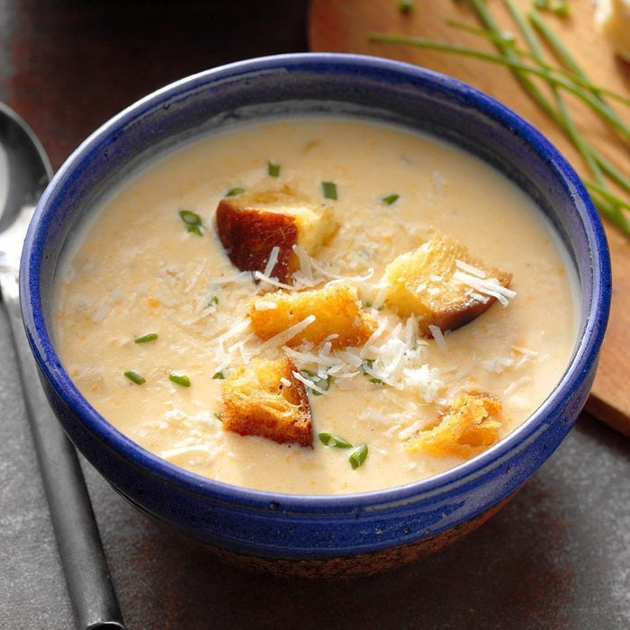

Cheese Soup

Cheese soup is a type of soup prepared using cheese as a primary
ingredient, along with milk, broth and/or stock to form its basis.
- Butter
- Onion
- Flour
- Chicken broth
- Milk
- Cheddar cheese
- Melt butter over medium-high heat
- Add onion and cook about 5 minutes
- Stir in flour to make a roux
- Add broth and cook stirring constantly until thickened
- Add milk and cook until just boiling, stirring constantly
- Blend the soup until smooth
- Cook again over medium heat until just boiling
- Remove from heat and whisk in chesse until melted